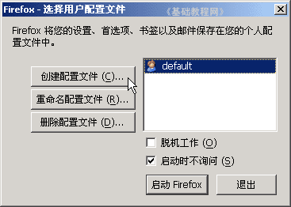
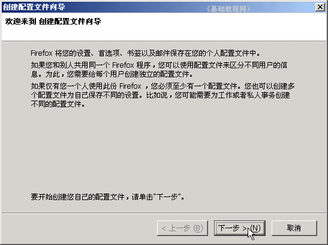
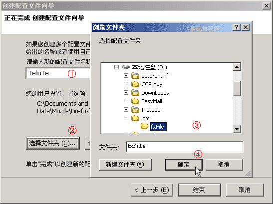
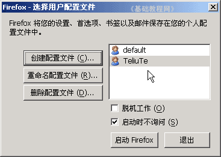
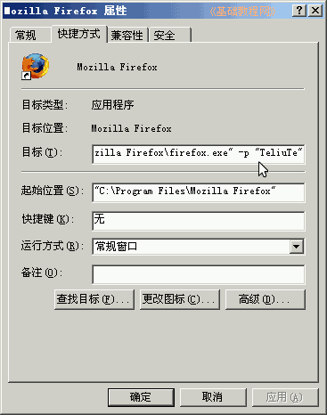
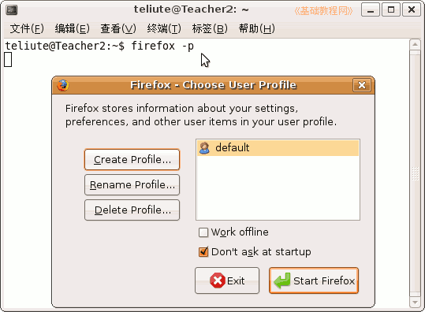

Firefox3 基础教程
作者：TeliuTe 来源：基础教程网
十、新建配置文件 返回目录 下一课配置文件包括选项设置、安装的扩展、缓存临时文件、书签、历史纪录等等，
Windows 中，在运行栏中输入： %AppData%\Mozilla\Firefox\Profiles ，点“确定”可以打开查看一下，默认放在了C:盘当中；
Ubuntu 中，在文件浏览器窗口地址栏里输入： ~/.mozilla/ ，然后按回车键即可打开；
1、新建配置文件（Windows为例）
1）关闭Firefox窗口，先在D:盘自己的文件夹里，新建一个 fxFile 的文件夹，
再点“开始－运行”，输入 firefox -p ，然后点确定，出现“配置”对话框；

2）点左边的“创建配置文件”按钮，出来一个创建向导面板，点“下一步”继续；

3）在出来的选择位置面板中，把中间的“默认用户”，改成自己的用户名，
然后点下面的“选择文件夹”按钮，找到D：盘点开旁边的加号，找到自己的文件夹，选中里面的 fxFile 文件夹；

点“确定”、“结束”按钮，关闭向导面板，回到开始的“配置”对话框，在中间的列表中就有了刚才新建的配置文件；

5）点“启动Firefox”按钮，就可以从这个新的配置文件启动Firefox了，
默认选中了“启动时不询问”，也就是每次都用这个配置文件，如果去掉勾，下次会先出现配置对话框；
6）简便使用一个配置文件的方法是，修改桌面Firefox快捷方式的属性，在“目标”最后面加上 -p "TeliuTe"
最后的双引号是英文字符，里面的 TeliuTe 改成自己的配置文件名称；

2、Ubuntu 里新建配置文件
1）启动一个终端，点“应用程序－附件－终端”；
2）输入命令： firefox -p 然后按一下回车键，出来“配置”对话框，
操作跟Windows系统相似，按提示操作即可；

本节学习了新建配置文件的基本操作，如果你成功地完成了练习，请继续学习下一课内容；本教程由86团学校TeliuTe制作|著作权所有
基础教程网：http://teliute.org
美丽的校园……
转载和引用本站内容，请保留版权信息和本站链接。